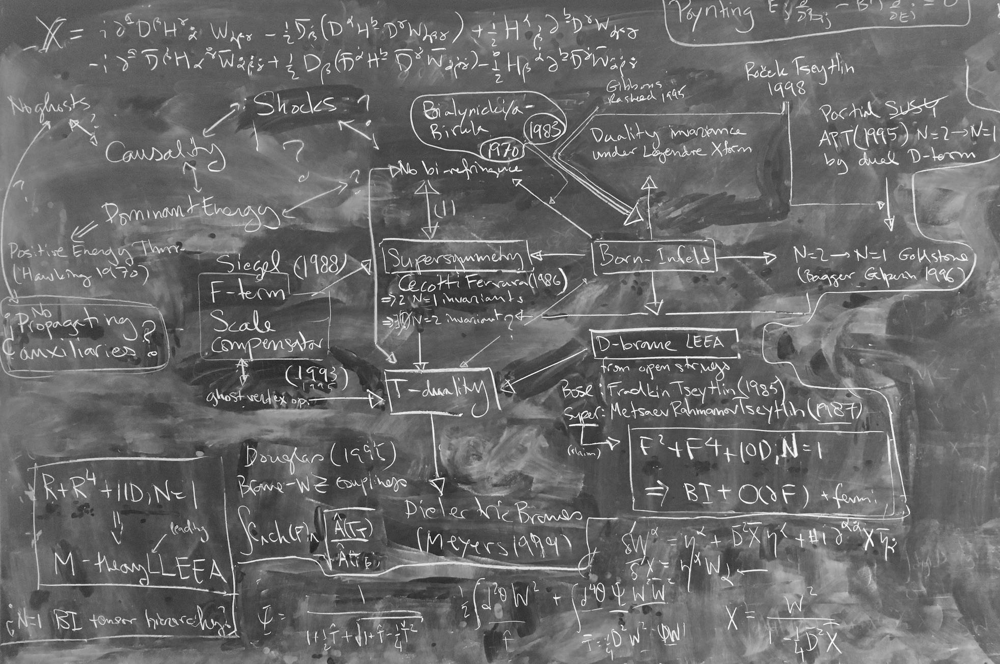

Born–Infeld ideas, low-energy structure, and the search for controlled ways of softening pathologies
One recurring theme in my research is that singularities and unbounded observables should not be treated as technical nuisances. Rather, they are a sign that a physical description has been pushed beyond the regime in which it makes sense. This motivates the study of effective actions that modify a theory to soften or remove these inconsistencies while preserving the defining underlying structures.
In electromagnetic theory, Born–Infeld-type actions serve as a demonstration that such a demand is satisfiable in principle, and justifies insisting on it. In my studies, I have come to find that supersymmetry is one of the few principles that fixes the known Born-Infeld actions. More broadly, this line of thought feeds into questions about low-energy effective descriptions in string theory and M-theory.
A singularity is the point at which a theory is signalling its own breakdown, and is no longer really telling us anything physical. That makes singularities useful diagnostic tools, as they tell us where a familiar description has been pushed too far and where a more fundamental structure cannot be avoided.
The energy of two charged particles with charges $q_1$ and $q_2$ separated by a distance $r$ is given by Coulomb's law $$ U_C(r)=-\frac {kq_1q_2}r $$ where $k=\frac1{4\pi\varepsilon_0}\approx 9\times 10^{9}$ Joules per Coulomb2. If charges are point particles, the potential energy between the two of them is arbitrarily large, since there is no minimum separation: $U\to \infty$ as $r\to0$.
Born found this situation to be unsatisfactory. He was inspired by Einstein's theory of relativity in which the speeds of all massive particles are bounded above by the speed of light: in that theory, factors of $$ \gamma =\frac1{ \sqrt{ 1-\left( \frac{v}{c} \right)^2 } } $$ enforce that $v\lt c$. Born set out to look for a similar situation in which the electric energies are bounded above as well. Infeld joined the project and after two or so additional papers, the pair finally decided on the form of what we now call the Born-Infeld action. "Action" is the physics name for an object with units of energy$\times$time that encodes the dynamics of a system.
For simplicity of exposition, I will pretend that this action is simply $\sqrt{1-\alpha E^2}-1$ (which is, strictly speaking only true in one space and one time dimension). Then we can see that the electric field must be bounded by $|E| \lt \frac1{\sqrt\alpha}$. Now the important thing is that when $|E|\ll \frac1{\sqrt{\alpha}}$, then we can expand this action as a power series using $\sqrt{1-\varepsilon^2} = 1 -\frac12\varepsilon^2+\dots$ where the ellipses stand for terms that start at order $\varepsilon^4$ and go higher. Now the point is that the $-\frac \alpha2E^2$ corresponds to the one that gives the Coulomb rule, and so when the fields are small, we recover the original theory. However, from the square-root form of the proposed modification, strong fields are limited in magnitude by $\frac1{\sqrt\alpha}$, so the Coulomb solution of the Maxwell theory is not a solution of the Born-Infeld theory.
This is a key point: the Born-Infeld action is not a small modification of Maxwell's theory, but rather a different theory that shares the same low-energy limit. The Born-Infeld action is an example of an effective action, which is a theory that modifies another theory in such a way as to preserve the low-energy limit while changing the high-energy behavior. Effective actions are important tools for understanding how to modify theories to remove singularities and other pathologies while preserving the underlying structures that make them interesting and useful in the first place.
The Born-Infeld theory is a very specific member of an infinite family of theories that are higher-derivative modifications of the Maxwell theory: starting with $-\frac12 E^2$, anyone could ask for how one might modify it to include higher-derivative terms while preserving the low-energy limit. Adding anything you like is allowed and any parameterization of the theory in this way is called non-linear electrodynamics.
Every single person I have talked to about the BI action and what they think fixed it to be exactly this action has mentioned that it is "invariant under electromagnetic duality transformations". What they mean by this is that if you flip $E\to B$ and $B\to -E$, the theory is unchanged. Schrödinger knew this, and, more importantly, there are infinitely many theories that are invariant under these transformations. The question is: which one is the correct one?
There are various approaches to this question that all sound reasonable. For example, you could start with the quantum field theory of light and electrons, and try to remove the electrons by making them very heavy. Then the resulting theory has light-light interactions just like the $E^4$ terms in the BI expansion. This procedure gives the Euler-Heisenberg Lagrangian. This is a good starting point, because at least now we have a second example of "non-linear electrodynamics" that differs from BI, and we can ask "how does it differ?". One fact that experimentalists have tried to verify is that EL theory gives rise to birefringence. This is the phenomenon that the two polarizations of light travel at slightly different speeds. This turns out to be a generic feature of non-linear electrodynamics, that the BI theory does not share. Unfortunately, any higher-dimensional theory cannot birefringe, so we cannot use this criterion as-is.
The idea now is to find a Born-Infeld-like theory of gravity. The singularity at the center of a black hole is a sign that the theory of gravity we are using (general relativity) is being pushed beyond its regime of validity. We can ask if there is an effective action that modifies General Relativity in such a way as to remove the singularity while preserving the low-energy limit. It is not obvious how to do this, because it is entirely unclear what fixes the BI action. So: if we can get a handle on what fixes the BI action, then we can use that understanding to look for similar modifications of gravity. This is one of the problems I have been working on for a few years, as evidenced by the image below. It is a picture of my blackboard in my office in the Mitchell Institute for Fundamental Physics in which I am tracing the logical connections between the properties I estimate to have a high probability of being fundamental and relevant to the structure of the BI theory.
As anyone can plainly see from this image, Born-Infeld plays a central role in the organization of properties of fundamental theories.

One of the central concepts in this image is supersymmetry. Underneath it is T-duality, which is a symmetry of the BI action, but like electromagnetic duality, it does not suffice to pin it down uniquely. So far, only unifying principle I have managed to identify is the requirement of invariance under supersymmetry: With enough supersymmetry, the BI action is uniquely determined to be the non-linear theory.
Are we now in a position to find a sensible non-linear theory of gravity? Not really, because we know a few consistent theories of quantum gravity that are all supersymmetric: they are the low-energy effective theories of the consistent superstring theories. Instead of picking one and proceeding to try to implement the program, we should pause to think about what to do about this situation first. Luckily, others have been thinking about these problems too, and that collective work eventually culminated in the conjecture that all superstrings are unified into one over-arching "M-theory". At the lowest energies, M-theory reduces to eleven-dimensional supergravity, and so finally, we settle on the following conjecture: If we start with 11D supergravity (which is unique), can we find the first non-linear term (called the "leading irrelevant deformation"), and make the whole thing supersymmetric?
Even this was not originally my idea: Green, Gutperle, and others had proposed it. However, the techinques used to try to exploit this idea were not strong enough to put much of a dent in the problem. Where my work comes in is that I think it can be done with hybrid superspaces of the type I had been working on for phenomenological reasons.